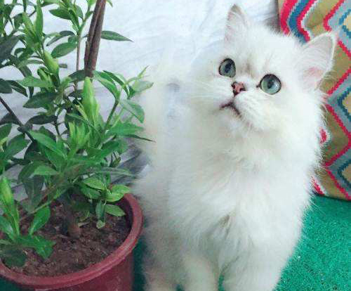

宠物猫的生命在大多数人眼里也就只有的12年到15年左右吧，但是大多数人都没有的办法能够让宠物猫活的更久一点儿的，能够让猫咪的寿命增加陪伴主人的时间更长一些，接下来小编就分享一下关于如何的

随着年龄的增长，更有必要带猫咪去医院去做检查。例如，取血样(也有可能是尿样或便样)、检查内脏器官的健康状况，前提当然是您要带猫咪去做常规检查。
但是现在越来越多的猫可以活到十八九岁甚至二十几岁。为什么猫咪的寿命会逐渐变长呢?主要是因为主人们在猫咪的喂养过程中懂得定期到宠物医院做身体检查，怀孕猫猫饮食需要改善解说。
不过宠物医生有办法让您的宠物开口说话，他们有办法了解到这些症状，在造成重大问题前控制病情，它不会告诉您它哪里不舒服，或是胸闷、肚子痛、或是眼睛看不清楚。这些症状都是严重问题的征兆，所以如果能检测到这些问题是件好事。
那就需要你好好的照顾它，帮助它延长寿命哦。猫咪的寿命可以延长哦!猫的平均寿命是12到15岁，要确保宠物健康可不是件容易的事。最难办的一点是猫咪不会讲话，猫咪的寿命可以延长哦!
猫咪交易网 表示：不管是什么样的宠物猫的都需要一个合理的饲养方式的宠物猫才会的活的时间比较长一些，其次就是猫咪饲养的环境要有所改善，喂养猫咪也是有技巧的，希望以上的内容能够给你带来帮助。
文/来源：猫咪交易网http://www.maomijiaoyi.com/
声明：内容受到版权保护，如若复制将会追究法律责任！